当空转遇上单细胞~
原文：https://mp.weixin.qq.com/s?__biz=MzAwMzIzOTk5OQ==&mid=2247505721&idx=1&sn=19d02b3858ebcf483d9e071b8ba00092&chksm=9b3cae69ac4b277f5b90fd75819ac8435226ad6daaf744f367d49ceb8099408e097d48656e2f#rd 合集：单细胞教程全收录
一、理想与现实的差距
提到空间组学，我理想中的空间组学技术应该是这样：
** **
1. 知道组织内每个细胞的位置；
2. 获悉不同位置上的细胞类型；
3. 每个细胞的精准状态： 静息、增殖、凋亡、活化；
4. 与细胞状态相关的分子基础： DNA变异与修饰、RNA表达、蛋白序列和定位……
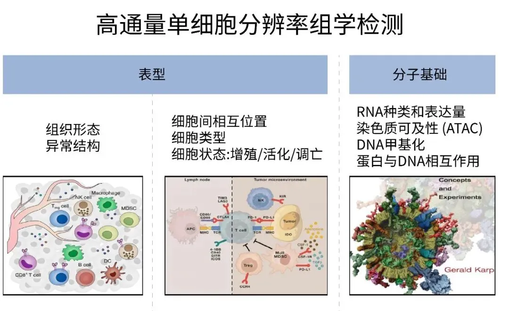
图1 理想的空间组学技术检测指标
然而现实中的空间组学技术是这样的：
** **
1. 根据细胞核成像虚拟分割细胞；
2. 虚拟细胞分群混乱，类型不易判断；
3. RNA检出太少，细胞状态无从分析；
4. 只能检测RNA，且细胞归属混淆。
为什么现实如此骨感？
** **
二、现有技术的局限
空间转录组大致分为4类：
1. 原位杂交成像： 以MerFish、SeqFish+为代表；
2. 原位测序： 以Xenium，STARmap为代表，这两类技术都是通过设计探针原位检测细胞内目标RNA，属于非组学检测，堪堪用于科研发现；
3. 显微切割： 虽然可以做到转录组学水平，但分辨率和通量太低；
4. 位置标签标记： 利用包含空间信息条形码的oligo-dT探针微阵列与组织切片中的 RNA直接杂交，进一步通过逆转录将位置信息编码到测序文库中，空间标签可以做到微米或纳米级别分辨率，10x Visium和华大Stereo-seq都属于此类，是当前应用最广的空间转录组方案，然而此类技术的局限在于：
A. 公平≠最优，组织内细胞异质性与相同透化条件的矛盾
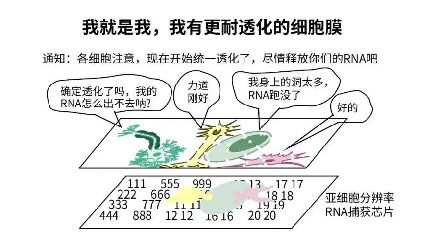
图2 组织切片上不同细胞的透化效果差异
B. 亚细胞分辨率≠单细胞分辨率，细胞区域划分与类型判断难题
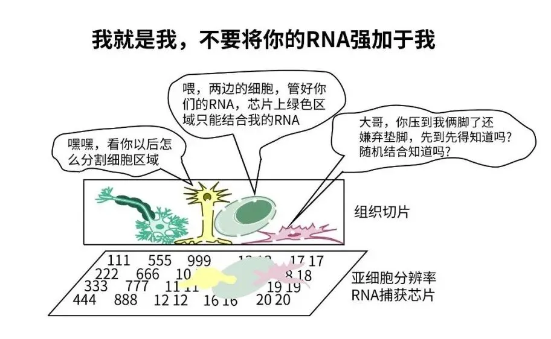
图3 空间芯片上判定的细胞区域存在不同细胞来源的RNA
C. 原位扩散≠All in：单位面积基因检出灵敏度低
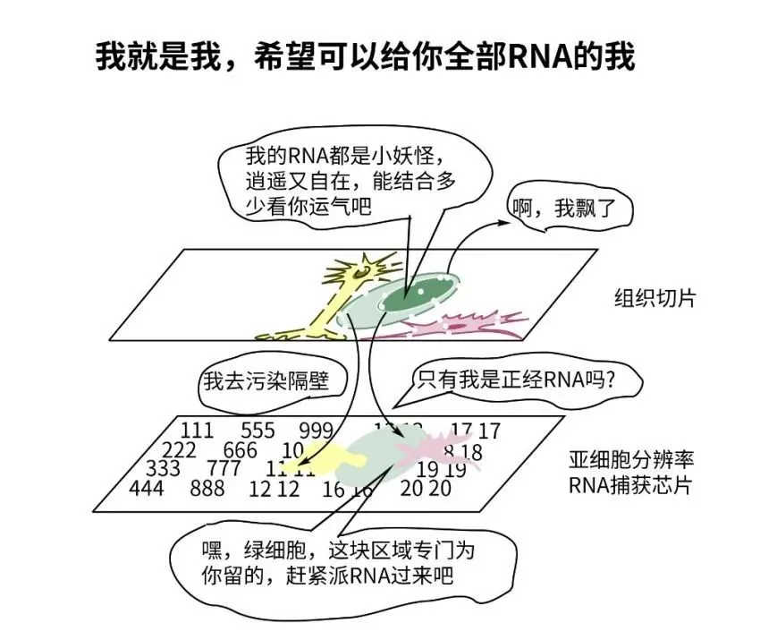
图4 RNA随机扩散会造成基因检出率低和交叉污染
D. 朋友牛≠自己牛：空间组学搭配单细胞测序的联合分析能解决问题吗？
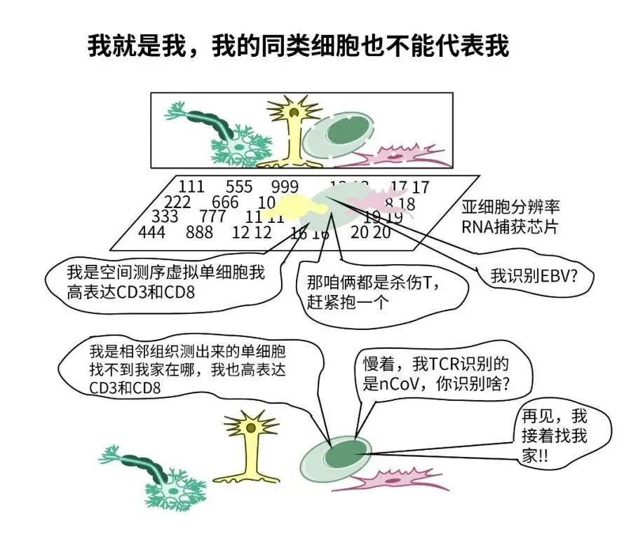
图5 空间与单细胞联合分析
不能完全解决精准细胞分析问题
** **
三、理想照进现实：
SeekSpace™技术原理
那是否存在一个真正单细胞分辨率 的、不需要摸索透化条件的、灵敏检出单细胞纯净RNA的、而且不需要空间与单细胞虚拟联合分析的空间转录组技术呢？没错，这就是北京寻因生物开发的SeekSpace™ 空间单细胞转录组技术。
单细胞组学发展到现在逐渐成为成熟的常用科研工具，不仅能够检测RNA转录组，还可以检测基因组CNV，DNA甲基化、ATAC及CUT&Tag等更多组学的检测，通过检测这些分子指标可以轻松实现单细胞类型和状态分析（理想空间技术要求3-4）。如果能在细胞解离前在组织原位给细胞打上空间位置标签 并通过单细胞测序将空间位置标签与细胞标签关联（理想空间技术要求1-2），就能实现理想的空间组学技术。话不多说，直接看SeekSpace™空间单细胞转录组原理图：
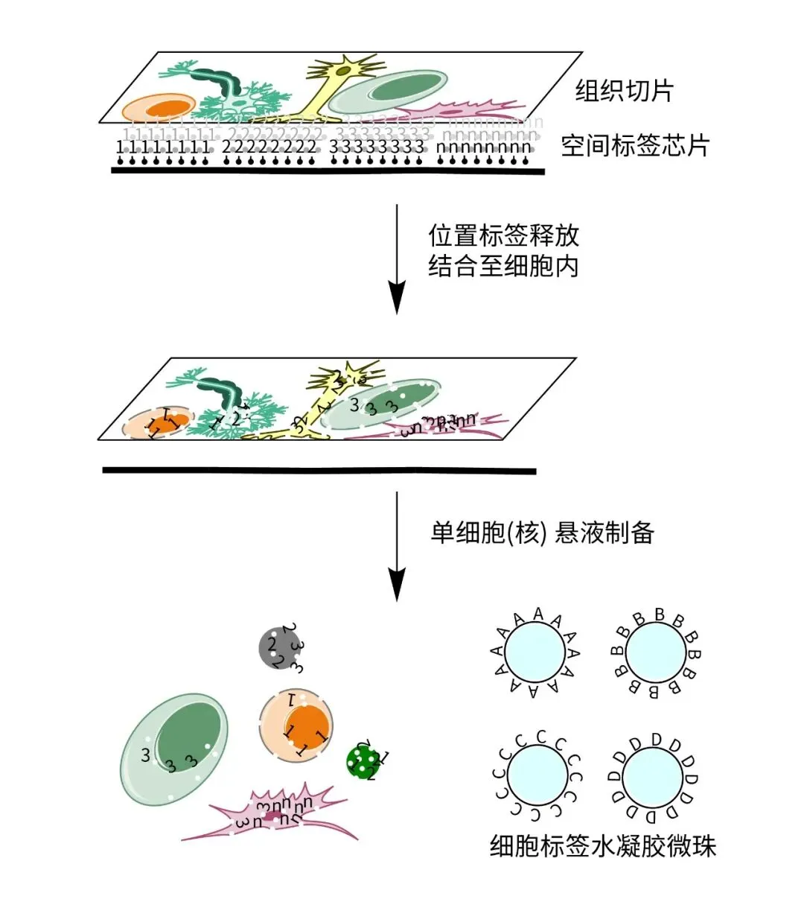
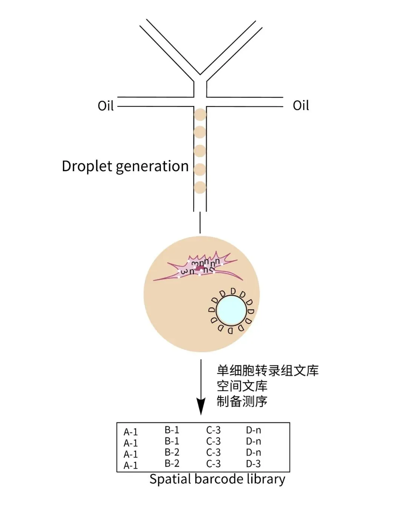
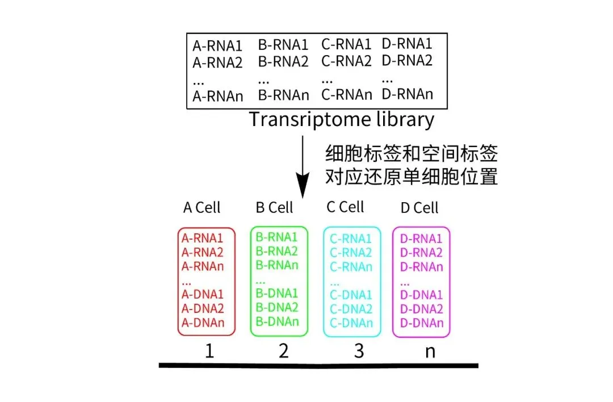
图6 SeekSpace™空间单细胞
转录组技术原理示意
有没有觉得流程简洁清晰？根本原理就是利用可断裂的位置探针给单细胞打上原位空间标签，同时解离为单细胞状态，然后输入SeekOne® DD油包水系统进行细胞标记并分别构建单细胞转录组文库和空间文库，通过共有细胞标签可以将单细胞转录组与空间位置信息一一对应。没错，和普通单细胞的区别只在于制备含有空间位置标记的单细胞悬液， 实验室中有寻因SeekOne® DD设备的老师可以直接兼容新的空间产品，一买二用超划算。
对技术细节还感兴趣的老师可以移步专利搜索寻因生物，那里会有更详细的介绍，希望也帮我们检索下是否是全球第一份相关专利。
** **
四、SeekSpace™数据表现
那SeekSpace™空间单细胞转录组技术具体表现如何呢？
以空间组学常用的小鼠脑作为样本测试数据：
1.优秀的降维聚类和细胞注释背后是灵敏的单细胞基因检出能力
首先看看基础的单细胞类型分析效果。以10x单细胞核测序和SeekSpace™单细胞检测的整合聚类对比，具有一致的单细胞类型注释能力：
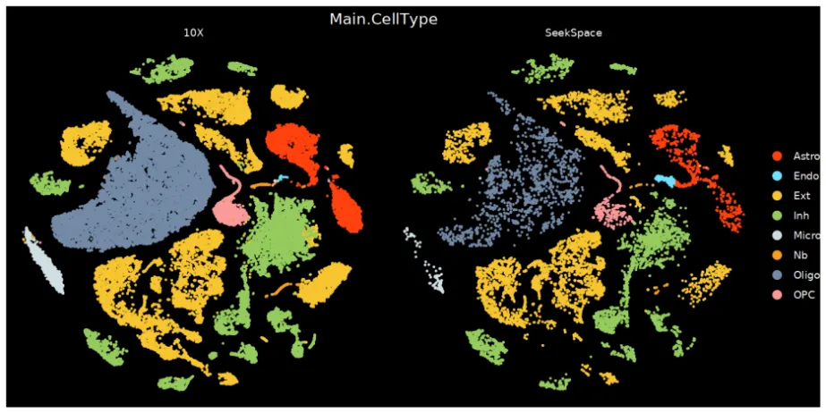
图7 SeekSpace™技术与
10x单细胞核测序具有一致的聚类和注释
细胞占比统计显示10x单细胞核测序平台和SeekSpace™平台得到的细胞占比相似性很高：
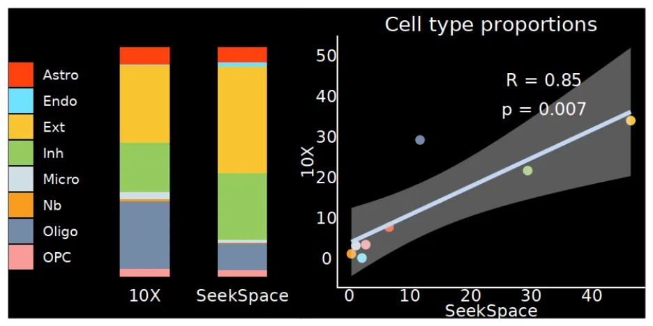
图8 SeekSpace™技术与10x单细胞核测序的
细胞占比统计
还想和亚细胞分辨率的国内友商的空间Cell Bin聚类分析图对比下？
好的，满足你：
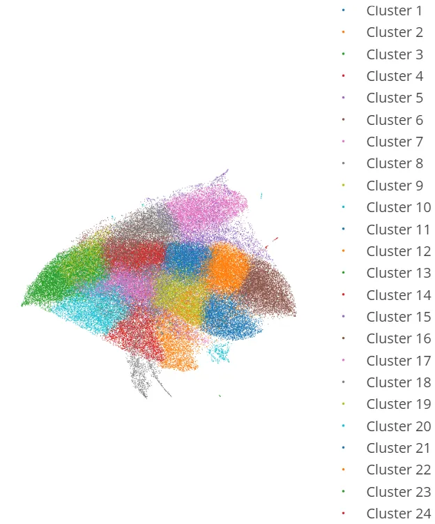
图9 来自友商官方Demo数据的Cell Bin聚类图
SeekSpace™的单细胞基因检出灵敏度究竟如何呢？我们的优秀数据显示在50%左右饱和度下可以达到1000以上的中位细胞基因检出数。对于此，我们需要要求更多吗？
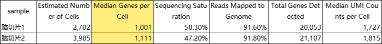
表1 小鼠脑切片空间标记后的
单细胞转录组测序数据展示
那友商的Cell Bin的基因检出呢？
只放数据不评论。
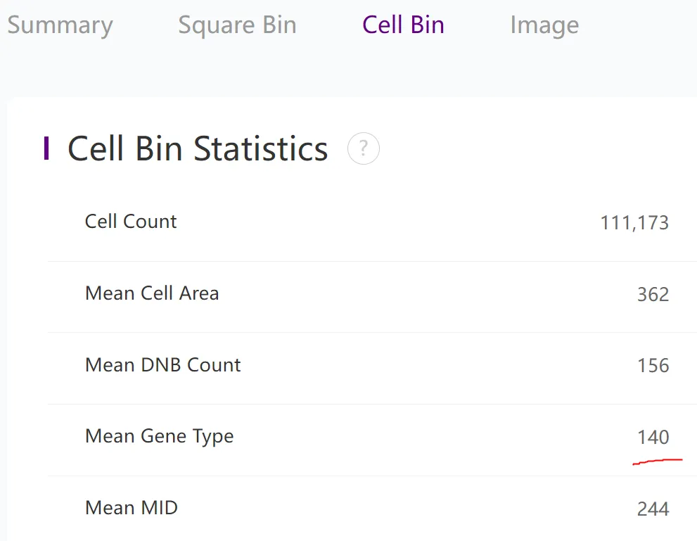
图10 平均Cell Bin的基因种类数
2. 单细胞的精准组织定位
当我们把这些聚类注释好的单细胞按照其空间坐标排布会是什么样的呢？
先解释大脑神经皮层的细胞分布，如下图所示，之前的研究表明根据Cux2\Rorb\Ctip2(Bcl11b)\Foxp2的差异表达可以较明显的分为五层细胞，那SeekSpace™以单细胞分辨率的相关基因表达也会呈现出相同趋势吗？
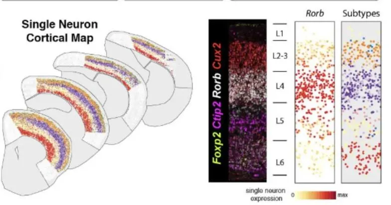
图11 大脑神经皮层的细胞分布
来源：https://www.sanger.ac.uk/group/bayraktar-group/
那当然是肯定的了，下图是分别标记四种marker基因的单细胞位置图, 是按照Cux2-Rorb-Ctip2(Cbl11b)-Foxp2由外至内定位：
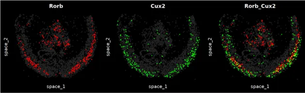
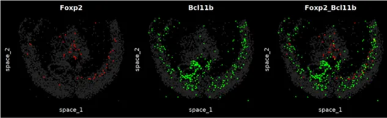
图12 SeekSpace™相关
Marker Gene高表达的单细胞位置图
10x Visium的效果呢？纯净度、分区和分辨率都不可比吧。
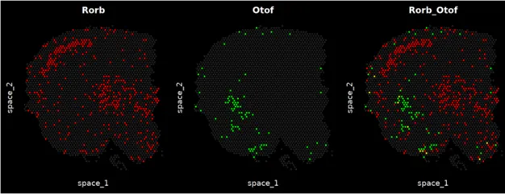
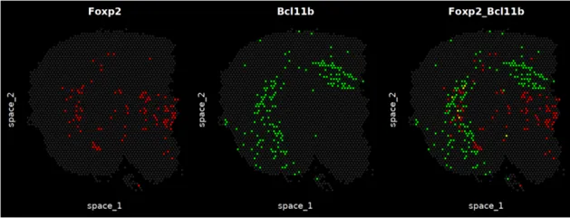
图13 10x Visium相关
Marker Gene高表达的SPOT位置分布
SeekSpace™更细节的细胞分群的组织定位可以吗？当然，谁让我们的基础单元是单细胞呢，每一个单细胞都可以和空间位置与细胞类型相对应。把兴奋性神经元群进一步分为8类亚群的空间定位图：
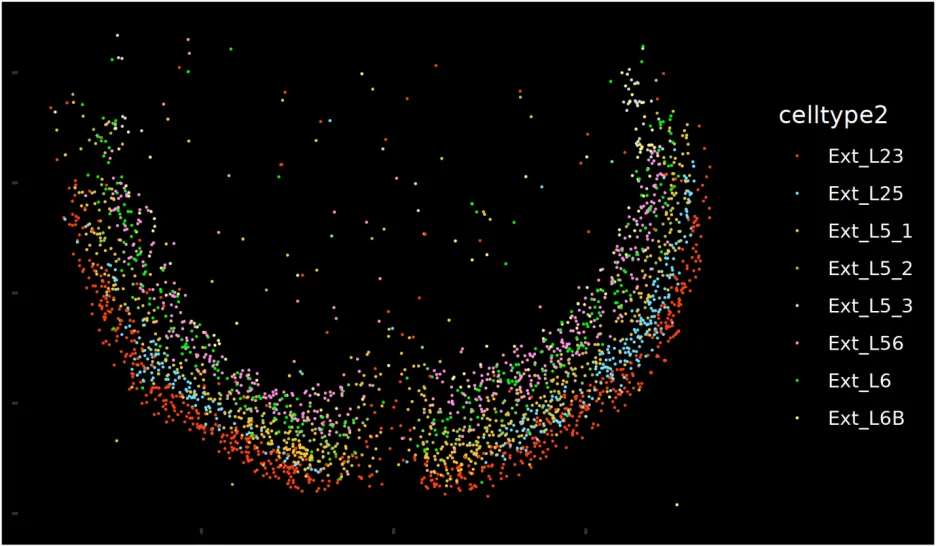
图14 兴奋性神经元细胞8类亚群的空间定位图
3. 从单细胞转录组到空间单细胞转录组学的进化
给大家展示下小鼠脑的所有类型的单细胞定位效果图：
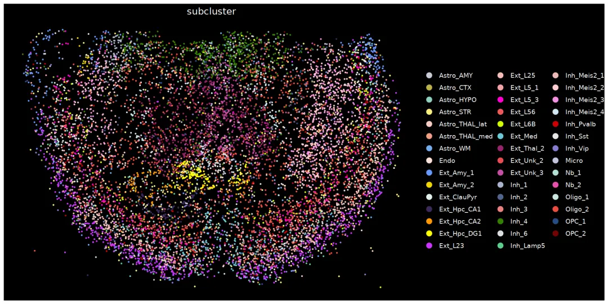
图15 不同类型的小鼠脑单细胞的空间位置分布图
最后，附上一个视频，恭祝大家从单细胞时代迈入空间单细胞时代。
接下来的技术会是什么走向呢，或许是空间单细胞多组学时代？那就一起期待吧。
寻因SeekSpace™空间单细胞转录组技术正式进入内测阶段，12月31日前，对外开放内测合作：
旨在与对该技术感兴趣、关注问题前沿的老师们共同探索更多研究领域的机会，同一物种、同一方向、同一组织类型，限一个项目，提供最有诚意最有力度的合作政策，先到先得，欢迎通过以下方式与我们取得联系，共享技术红利！
目前正处于新技术预热及内测阶段，更多数据及产品信息欢迎咨询，12月19日寻因生物SeekSpace™空间单细胞转录组产品正式发布， 敬请期待！
填写报名表单
添加微信咨询
** **
北京寻因生物科技有限公司
我们一直在做单细胞，空间也是！